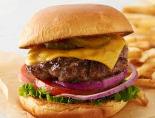

Burger Recipe

This burger recipe is my favorite. When I mean it's good, I mean it's good. It's like watching the Golden State Warriors play basketball...all I can say is that it's poetry in motion.
Anyways, you definitely have to give this recipe a try.
Ingredients
- ¼ pound bacon
- 1 (20 ounce) package ground turkey
- ½ cup bread crumbs
- ½ cup shredded Cheddar cheese
- ⅓ cup finely chopped yellow onion
- 1 egg, beaten
- 1 jalapeno pepper, diced
- 2 cloves garlic, minced
- ¼ teaspoon ground cumin
- salt and ground black pepper to taste
Steps
- Step 1
- Place bacon in a large skillet and cook over medium-high heat, turning occasionally, until evenly browned, about 10 minutes; drain and cool on a plate lined with paper towels. Crumble bacon.
- Step 2
- Mix bacon, turkey, bread crumbs, Cheddar cheese, yellow onion, egg, jalapeno pepper, garlic, cumin, salt, and pepper together in a bowl; shape mixture into eight 1/4-pound patties.
- Step 3
- Preheat an outdoor grill for medium-high heat and lightly oil the grate.
- Step 4
- Cook the turkey burgers on the preheated grill until no longer pink in the center and the juices run clear, 7 to 10 minutes per side. An instant-read thermometer inserted into the center should read at least 165 degrees F (74 degrees C).